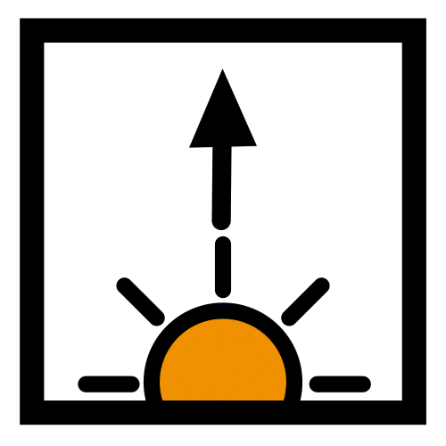
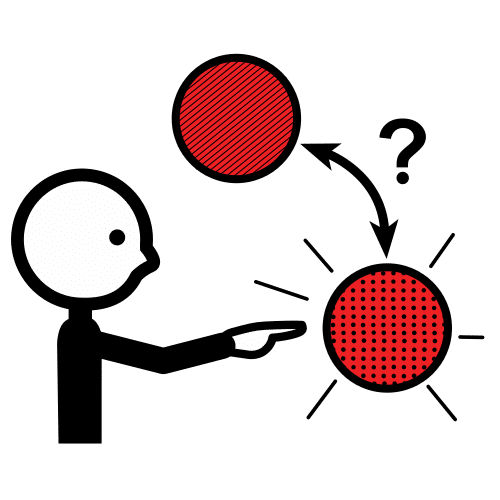
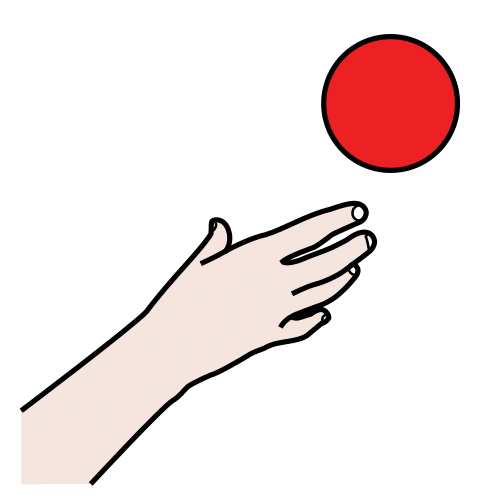

Guía para familias · Con plantillas
Apoyos visuales
en casa
Para empezar con un solo apoyo, usarlo siempre igual y retirarlo poco a poco. Con plantillas y tarjetas de rutinas de
casa.
Pictogramas: Sergio Palao. ARASAAC (Gobierno de Aragón). CC BY-NC-SA.
Licencia CC BY-NC-SA 4.0
ideducando.es
Guía,4 plantillasy 40 tarjetas
1Guía para familias
Qué es un apoyo visual
Un apoyo visual es algo que se ve y que ayuda a entender. Puede ser un objeto, una foto, un dibujo o una palabra
escrita.
Un ejemplo. Antes de salir, le enseñáis este tablero y decís: «Primero, me visto. Después, al parque».
Cuando se ha vestido, queda a la vista lo que viene: el parque.
Para qué sirve
Las palabras se van. El dibujo se queda.
A quién ayuda
A muchos peques. Sobre todo, a quienes tienen trastorno del espectro del autismo (TEA), trastorno del desarrollo del
lenguaje (TDL), trastorno por déficit de atención e hiperactividad (TDAH) o discapacidad intelectual.
Cada peque es distinto: lo que a uno le sirve, a otro no. Probad y mirad qué le ayuda.
De dónde sale. Los apoyos visuales están entre las prácticas con más respaldo para la infancia con TEA
(Hume y otros, 2021), y el Instituto Nacional para la Excelencia en la Salud y la Atención del Reino Unido (NICE)
recomienda usar palabras, dibujos o símbolos que tengan sentido para cada peque. En el cole, la Región de Murcia pide
dar las instrucciones también con dibujos al alumnado con trastorno del lenguaje (anexo V). La idea de las palabras que
se van es de la Confederación Autismo España (2025).
2Guía para familias
Para empezar, uno solo
Elegid uno solo, para el momento del día que más cuesta.
¿Qué es lo que más os cuesta?
¿Con qué empezar?
Si los dibujos aún no le dicen nada, empezad con objetos o fotos.
Antes de empezar
De dónde sale. Pocas imágenes, a la altura de sus ojos y de acuerdo con el cole: Autismo Sevilla, que
propone también contar hacia atrás. Esperar con un reloj visual: Grey y otros (2009). Elegir: CAST (2024, 7.1).
3Guía para familias
Cómo enseñarlo
Usadlo siempre igual y siempre a la vista.
Si algo cambia
Avisad con calma, con el apoyo delante. Cambiad la tarjeta mientras lo contáis: «Hoy no hay parque. Llueve. Hoy,
puzle».
De dónde sale. Los pasos siguen la guía para familias de AFIRM (Sam y AFIRM Team, 2024), la de
Autismo Sevilla y los consejos de los Centros para el Control y la Prevención de Enfermedades de Estados Unidos (CDC,
2026) sobre rutinas: cumplir lo que se dice y contar los cambios con calma. Las agendas visuales funcionan mejor
cuando se enseñan así, paso a paso (Knight y otros, 2015).
4Guía para familias
Errores frecuentes
Son normales y casi todos tienen un arreglo fácil.
De dónde sale. Usar siempre el mismo dibujo, pocas imágenes y pocas palabras: guía de Autismo Sevilla.
Cumplir lo que se promete: CDC (2026). Lo demás es propuesta de IdEducando.
5Guía para familias
Retirarlo poco a poco
¿Cuándo?
Cuando lo usa bien casi todos los días, durante varias semanas, y casi sin vuestra ayuda.
¿Cómo?
Cambiad una sola cosa cada vez. Antes de dar el paso siguiente, esperad a que el anterior vaya bien.
← Más apoyoMás autonomía →
No quitéis el apoyo de antes hasta que domine el nuevo.
Durante un tiempo, usad los dos juntos. Por ejemplo, la foto junto al dibujo, hasta que entienda el dibujo solo.
Si aparecen nervios
Volved al paso anterior, sin darle importancia. Después de unas vacaciones o de una temporada difícil, es normal
necesitar otra vez más apoyo.
Algunos apoyos se quedan siempre, y no pasa nada: los adultos también usamos agendas, listas y alarmas.
De dónde sale. Retirar la ayuda del adulto en cuanto se pueda: AFIRM (Sam y AFIRM Team, 2024). Dar
el apoyo justo e ir quitándolo: pautas del Diseño Universal para el Aprendizaje (CAST, 2024, consideración 5.3). Juntar
la foto con el dibujo antes de quitar la foto: guía de Autismo Sevilla.
Plantilla: Primero y después, dos tableros
Primero y después · Uno para casa y otro para llevar
Corta por la línea de puntos
En «Primero», lo que toca; en «Después», algo que le guste. Un círculo de velcro rugoso en cada círculo gris. Cumplid
siempre lo que pone en «Después».
Agenda de la mañana · Con velcro

Mi mañana
Toca
¡Hecho!
Hasta 5 pasos, en orden. Al terminar cada paso, su tarjeta baja a «¡Hecho!».
Velcro rugoso en cada círculo gris. Pictogramas: Sergio Palao. Origen: ARASAAC (arasaac.org). Licencia CC BY-NC-SA.
Propiedad: Gobierno de Aragón.
Tablero para elegir · Con velcro

Elijo
Para empezar, solo estas dos

Quiero
Pon arriba lo que puede elegir. Su tarjeta baja a «Quiero». Dale enseguida lo que ha elegido.
Velcro rugoso en cada círculo gris; el suave, detrás de cada tarjeta. Pictogramas:
Sergio Palao. Origen: ARASAAC (arasaac.org). Licencia CC BY-NC-SA. Propiedad: Gobierno de Aragón.
Temporizador de papel · Para recortar
Cuenta atrás
No avanza solo: quitad una ficha cada minuto, o tachad un número. Para medir el tiempo, usad un reloj o el temporizador
del móvil. Cuando no quedan fichas: «¡Se acabó!».
Fichas para las tiras de 3 y de 5 · Velcro suave detrás
Pictogramas: Sergio Palao. Origen: ARASAAC (arasaac.org). Licencia CC BY-NC-SA. Propiedad: Gobierno de Aragón. Las
tiras y las fichas son de IdEducando.
Para seguir · Fuentes y créditos
Cuando un apoyo ya funciona
Gratis en ideducando.es, con el mismo título:
De dónde sale esta guía
Apoyos visuales en casa: guía para familias. Equipo IdEducando, noviembre de 2026. Fuentes
consultadas el 17/11/2026. Lo que no lleva fuente en la guía es propuesta de IdEducando.
-
Hume, K. y otros (2021). Evidence-based practices for children, youth, and young adults with autism: Third generation
review. Journal of Autism and Developmental Disorders, 51(11), 4013-4032. DOI: 10.1007/s10803-020-04844-2
-
Knight, V., Sartini, E. y Spriggs, A. D. (2015). Evaluating visual activity schedules as evidence-based practice for
individuals with autism spectrum disorders. Journal of Autism and Developmental Disorders, 45(1), 157-178.
DOI: 10.1007/s10803-014-2201-z
-
Sam, A. y AFIRM Team (2024). Visual Supports (actualización de 2024), con su guía para familias. Universidad
de Carolina del Norte en Chapel Hill, Frank Porter Graham Child Development Institute. afirm.fpg.unc.edu
-
National Institute for Health and Care Excellence (2013, actualizada en 2021). Autism spectrum disorder in under
19s: support and management (CG170), recomendaciones 1.1.9 y 1.4.1. nice.org.uk
-
Gortázar Díaz, M. (s. f.). Guía Apoyos Visuales. Asociación Autismo Sevilla. Publicada en el Centro de
Recursos Online (CROL) de la Junta de Castilla y León. educa.jcyl.es/crol
-
Erena-Guardia, G. y otros (2025). Guía de buenas prácticas en el uso de pictogramas: orientaciones para una
señalización accesible. Confederación Autismo España. autismo.org.es
-
Centers for Disease Control and Prevention (2026). Tips for Relying on Routines and Rules. Essentials for
Parenting Toddlers and Preschoolers. Actualizada el 30 de abril de 2026. cdc.gov/parenting-toddlers
-
Grey, I., Healy, O., Leader, G. y Hayes, D. (2009). Using a Time Timer to increase appropriate waiting behavior in a
child with developmental disabilities. Research in Developmental Disabilities, 30(2), 359-366. DOI:
10.1016/j.ridd.2008.07.001
-
Resolución de 30 de julio de 2019 de la Dirección General de Atención a la Diversidad y Calidad Educativa (Región de
Murcia), sobre la respuesta educativa al alumnado con dificultades de aprendizaje. BORM n.º 184, de 10 de agosto de
2019, anexo V, pág. 25062.
-
CAST (2024). Universal Design for Learning Guidelines version 3.0, consideraciones 2.5, 5.3 y 7.1.
udlguidelines.cast.org
Pictogramas, dibujos y licencia
Los pictogramas son de ARASAAC, el Centro Aragonés para la Comunicación Aumentativa y Alternativa. Su licencia pide
citar este texto: «Los símbolos pictográficos utilizados son propiedad del Gobierno de Aragón y han sido creados por
Sergio Palao para ARASAAC (https://arasaac.org), que los distribuye bajo Licencia Creative Commons BY-NC-SA». Con
pictogramas de ARASAAC, este material no se puede vender: es gratis y lo será siempre. Lo demás es de IdEducando.
Licencia CC BY-NC-SA 4.0: puedes copiarlo y adaptarlo citando a IdEducando, sin fines comerciales y con la misma
licencia.